Dimensions¶
About¶
Dimensions (previously known as Visual Match) is a pattern-matching game written for Sugar; it is included as part of the Honey collection of Sugar add-ons. The object of the game is to find sets of three cards where each attribute—color, shape, number of elements, and shading—either match on all three cards or are different on all three cards.
Prime Dimensions is the number variant of Dimensions, where instead of shape, three prime numbers, 5, 7, and 11, are used. Texture is replaced by representation, e.g. Arabic numerals, Roman numerals, Mayan numerals, etc.
Word Dimensions is the word variant of Dimensions, where instead of shape, three word categories are used: animal, food, celestial body. Texture is replaced by font attribute: bold, italic, normal.
Visual Match is deprecated.

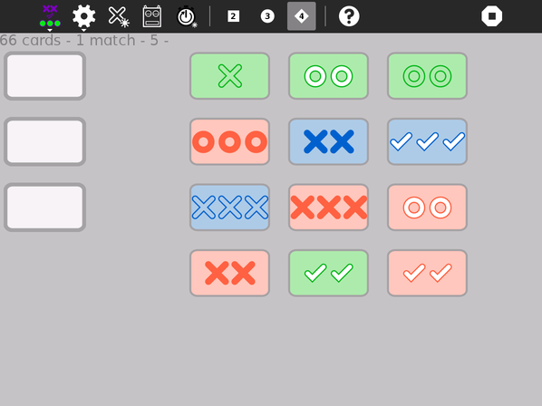

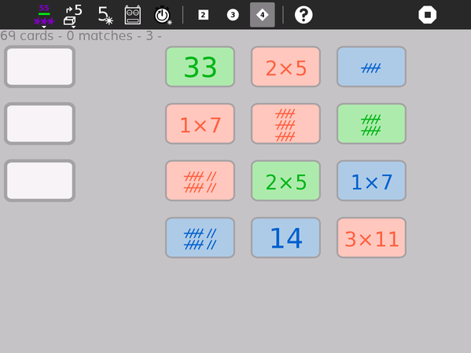

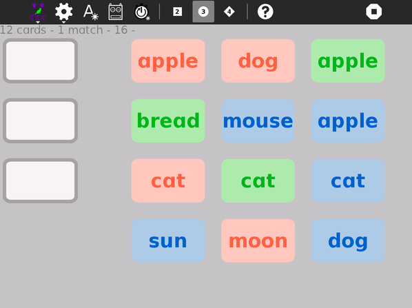
Where to get Dimensions¶
Dimensions activity is available for download from the Sugar Activity Library: Dimensions
The source code is available on GitHub.
Using Dimensions¶
The Basics¶
Play by clicking on three cards to make a match.
As you click, the cards will move to the match area on the left side of the screen. (You can also drag the cards to the match area.)
Once three cards are in the match area, a validation test is run:
If the cards make a valid match, a smiley face will appear.
If they are an invalid match, a frowny face will appear, which details as to why the cards do not match. Clicking on the smiley face will result in the match being removed and new cards dealt from the deck. Clicking on the frowny face will remove the last card in the match area back to the right side of the screen.
Once the game is over, the screen will fill with smiley faces.
Note: When Dimensions first starts up, it shows a simple animation of game play. Click on the screen to interrupt the animation and begin play.
More Details¶
Cards have four different attributes: color, shape, fill texture, and number of elements.
The number version works with prime factors instead of shapes and textures. The word version works with semantic groupings.
Matches must be valid across all four attributes. Examples of valid and invalid matches are shown below.
A valid match is defined by cards where each attribute is either the same on each card or different on each card, e.g, all three red cards or one red, one green, and one blue card. An invalid match is when two cards share and attribute and the third card does not, e.g., one red and two green cards.
At the end of the game, all of the matches are displayed in a simple animation.
Also, the game state is saved to the Journal and restored upon resume.
A simple cooperative sharing model is supported.
Everyone works cooperatively to find matches. Only the initiator of the shared session can start new games, change game type or level.
Examples of valid matches¶
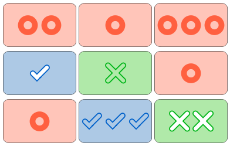
Rows from top to bottom
The colors, shapes, and shade match; numbers are different.
The numbers match; colors, shapes and shade are different.
Everything is different.
Examples of invalid matches¶
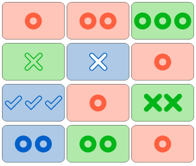
Rows from top to bottom
two of the same colors (red)
two of the same shape (X)
two of the same shade (solid)
two of the same number (2)
Additional Features¶
Dimensions includes a computer (robot) assistant: The robot will help you find matches.
It operates on a timer—finding matches after an adjustable number of seconds. The robot is enabled/disabled by clicking on the button the the Tool menu. You can also use the robot as a computer opponent. Decreasing the time between moves increases the challenge.
Dimensions includes Beginner, Intermediate, and Expert Modes.
In Beginner Mode, there are only 9 (32) cards and only two card characteristics, In Intermediate mode, there are 27 (33) cards and three card characteristics. In Expert Mode, there are 81 (34) cards and four card characteristics.
Dimensions includes number-search and word-search games in addition to the pattern-search game.
There is an edit mode so that customized word lists can be used in the Word Game (and shared over the network). Also, you can load custom cards from the Journal.
The grid layout is arbitrary; there is no need to pick in rows or columns, or one from each column.
The blank cards on the left are a place to display the most recent match; they can be otherwise ignored.
A count of number of matches found is shown in the toolbar; when the robot assistant is helping, the count is displayed as two numbers, where the number of matches found by the robot is in parentheses, e.g., 3(2) would indicate that the robot found 2 matches out of a total of 5 (3+2) found so far.
Dimensions keeps track of your best times (one for Beginner Mode and one for Expert Mode). These times are displayed next to the level-mode buttons on the Tools Toolbar.
As you improve, Dimensions will automatically advance you to a more difficult level of play.
You can select cards using the keyboard:
Top Row |
1, 2, 3 |
Second Row |
q, w, e |
Third Row |
a, s, d |
Fourth Row |
z, x, c |
Extra (bottom) Row |
8, 9, 0 |
Watch out, because Dimensions can be very addictive.
Other modes of play¶
Number Game
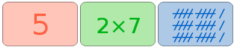
Everything is different: colors, prime factors, and representations.
Word Game
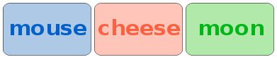
The words are from different semantic groups; the colors are different; the font style (bold) matches.
When there is no match
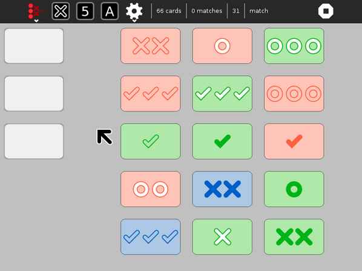
On occasion, there is no match among the 12 cards on the grid. If there is no match, three additional cards are dealt along the bottom row as illustrated in the figure above.
Gallery¶
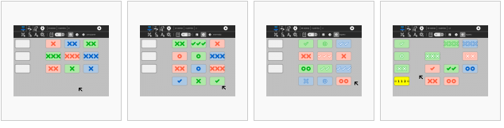
From left to right,
Basic play: two dimensions: number and color
Intermediate play: three dimensions: number, color, and shape
Advanced play: four dimensions: number, color, shape, and texture
Numbers don’t match
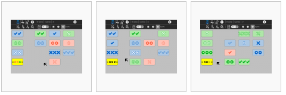
From left to right,
Colors don’t match
Shapes don’t match
Textures don’t match
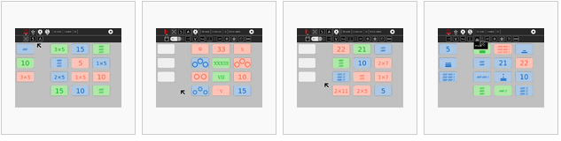
From left to right,
Prime factors (1,2,3,5,7 and 11) are used to determine matches
Roman numerals and dots in a circle
Hashes and products
Mayan
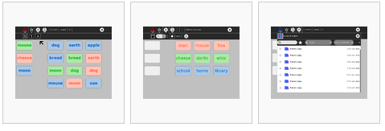
From left to right,
semantic word groups (animal, food, celestial objects) are used to determine matches
Editing the word list
Loading custom cards from the Journal
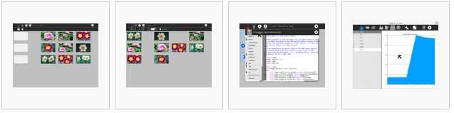
From left to right,
Custom cards loaded from the Journal
Playing with cards loaded from the Journal
the source code
Scores can be copied to the clipboard and then plotted by SimpleGraph.
Learning with Dimensions¶
At a basic level, Dimensions can be used to enhance the observational skills of young learners; they are repeatedly asked: what is the same? what is different? At a deeper level, the concepts of multidimensional sets can be explored.
The numbers games can be used to explore different arithmetic representations.
Extending Dimensions¶
Exploring the math¶
The combinatoric math behind Dimensions may be of interest to some learners: See this for an explanation.
Creating a custom game¶
You can create your own set of cards for Dimensions. Use your favorite program for creating images (Paint, Turtle Art, Record, etc.) to make sets of cards. You need to create at least 9 cards in order to play at the beginner level (3 cards each along 2 dimensions). You can also make a collection of 27 cards (3 cards each along 3 dimensions) or 81 cards (3 cards each along 4 dimensions). The cards must all have the same name in the journal with the exception of a number, beginning with 1 and incrementing by 1, e.g., card.1.png, card.2.png, … card.9.png. Any image format supported by Sugar should work and you do not have to include the image-type suffix in the title, e.g., card.1, card.2, … card.9 will also work. Just be sure that the order corresponds to the serialization of your multidimensional space, e.g.:
card name |
dimension 1 |
dimension 2 |
|---|---|---|
my-card.1 |
one |
red |
my-card.2 |
two |
red |
my-card.3 |
three |
red |
my-card.4 |
one |
green |
my-card.5 |
two |
green |
my-card.6 |
three |
green |
my-card.7 |
one |
blue |
my-card.8 |
two |
blue |
my-card.9 |
three |
blue |
You load a set of custom cards from the Journal by clicking on the ‘import image’ icon and selecting any one image of your set. The rest will be loaded automatically.
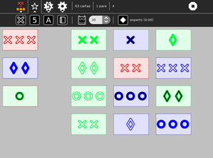
The above cards were generated in Turtle Art. The sample code is supplied with Turtle Art: set.ta, the code generates a deck of cards and saves them as SVG to the Journal.
Where to report problems¶
Please report bugs and make feature requests at dimensions/issues.
Credits¶
Dimensions was written by Walter Bender and the students from his 2009-2010 freshman seminar at MIT: Games, Puzzles, and Other Things to Think With. Special thanks to Michele Pratusevich and Vincent Le, as well as Mark Battley.